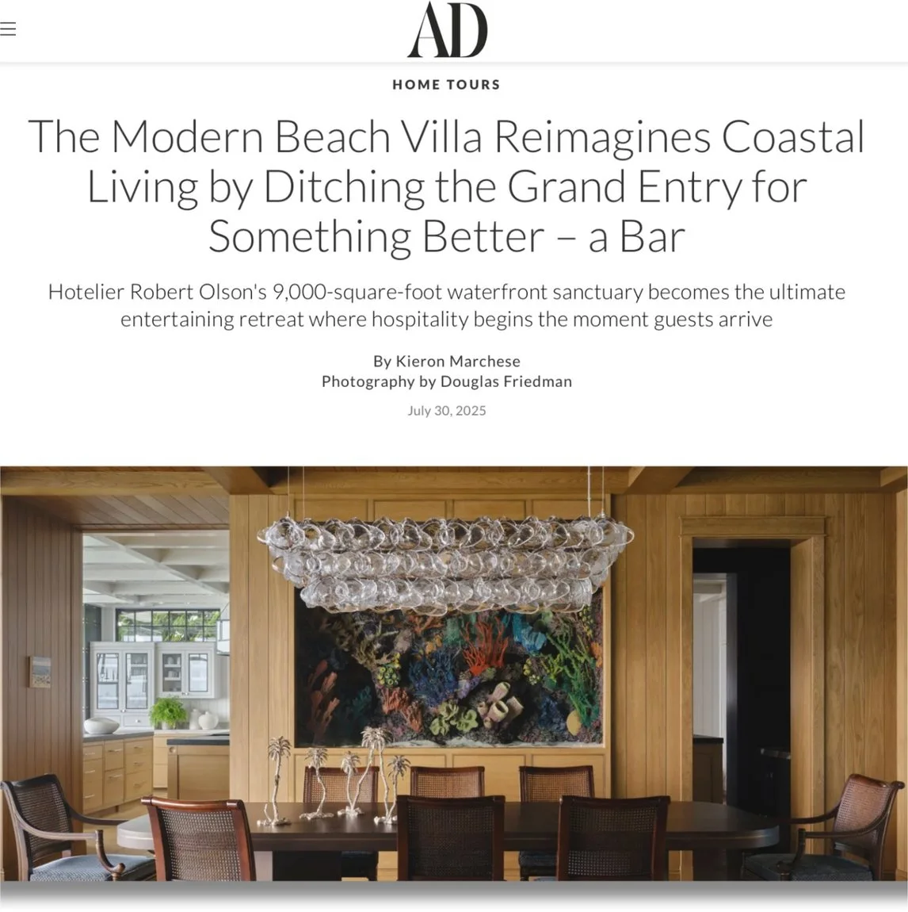
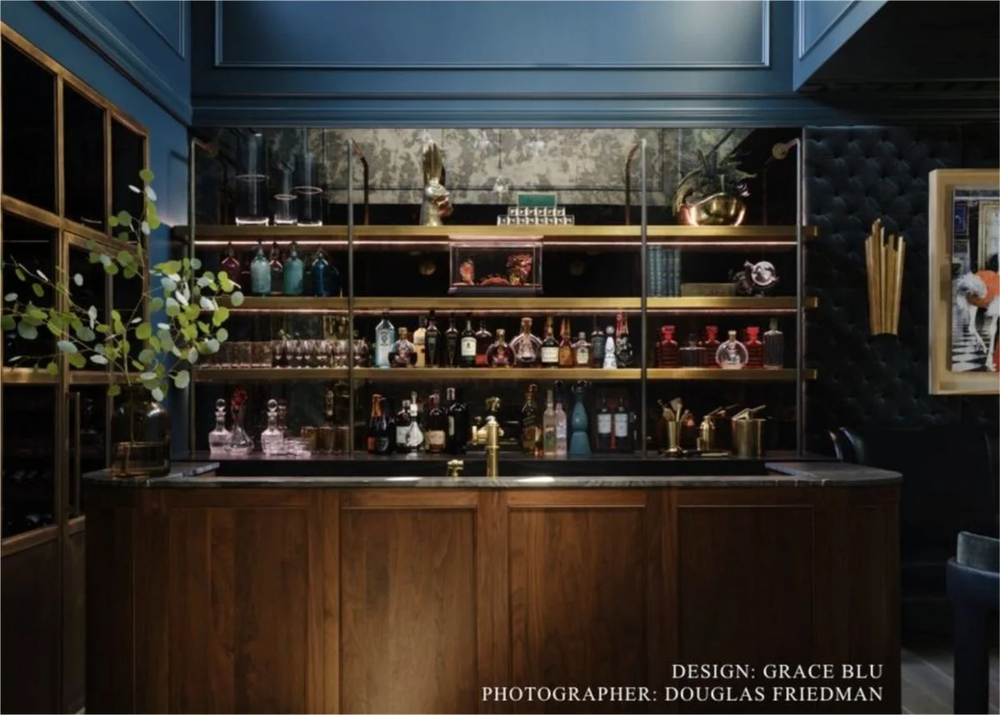
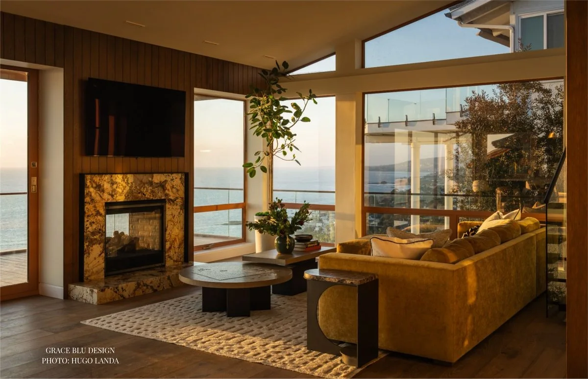

Case study one
Grace Blu Interiors
Embedded creative direction for a luxury interior design studio: how its rooms were styled, photographed, published and shown online.
What I did
- Lead stylist on AD's Modern Beach Villa feature, co-directing the shoot with Douglas Friedman
- Styled and art directed project photography
- Built the brand board: palette, fabric and finish
- Refined the brand and curated its photography
- Shot and edited short-form video for social
Results
11K→30KInstagram followers
ADPublished feature, July 2025
LeadStylist, Newport Beach Home Tour 2025


